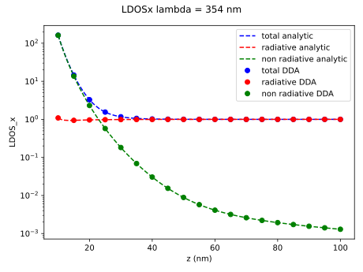

Local density of states for a metallic nanoparticle
This example aims to show how to use other utilities such as the local density of states (LDOS) by reproducing the results of R. Carminati et. al., Opt. Comm. 261, 368 (2006). The system under study is a silver particle of radius 5 nm around its plasmon-resonance frequency (wavelength $\lambda$ = 354 nm) and at out-of-resonance ($\lambda$ = 612 nm). The numerical projected LDOS (see the Theory pdf is then compared with the analytical results derived in the that manuscript.
If you want to run this example, copy it or download it on the github (example_ldos_silver_np.jl) and run it using
julia example_ldos_silver_np.jl
Let's start by importing CoupledElectricMagneticDipoles.jl. Note that we also use PyCall, because we will use the python matplotlib library in order to plot the results.
#imports
using CoupledElectricMagneticDipoles
using PyCall
@pyimport matplotlib.pyplot as plt
Defining analytical solutions from R. Carminati et. al., Opt. Comm. 261, 368 (2006)
Let us first define the analytical solution of the LDOS, that takes as inputs the dimensionless distance kz and polarizability alp_dl, and the outputs are the projected LDOS along the z- and x-axis. By definition, the silver nanoparticle will be placed at the origin of the coordinate system, and the LDOS is measured along the z-axis.
# analytic solution R. Carminati et. al., Opt. Comm. 261, 368 (2006)
function ldos_analytic(kz, alp_dl)
ldos_z = 1 + 6*imag(alp_dl*exp(2*im*kz)*(-1/kz^4 - 2*im/kz^5 + 1/kz^6) )
ldos_x = 1 + 3/2*imag(alp_dl*exp(2*im*kz)*(1/kz^2 + 2*im/kz^3 - 3/kz^4 - 2*im/kz^5 + 1/kz^6) )
return ldos_z, ldos_x
end
function nonrad_ldos_analytic_shortdistance(kz, alp_dl)
ldos_z = 6*(imag(alp_dl) - 2/3*abs2(alp_dl))*(1/kz^4 + 1/kz^6)
ldos_x = 3/2*(imag(alp_dl) - 2/3*abs2(alp_dl))*(1/kz^2 - 1/kz^4 + 1/kz^6)
return ldos_z, ldos_x
end
function rad_ldos_analytic_shortdistance(kz, alp_dl)
ldos_z = 1 + 4*abs2(alp_dl)*(1/kz^4 + 1/kz^6) + 4*real(alp_dl)/kz^3
ldos_x = 1 + abs2(alp_dl)*(-1/kz^4 + 1/kz^6) - 2*real(alp_dl)/kz^3
return ldos_z, ldos_x
endSetting physical properties
Now let us set the parameters of the system, as well as the variables in which the LDOS will be stored.
# physical properties
# particle radius
a = 5
# wavelengths
lamb = [612, 354]
# dielectric constant of the particle
eps=[-15.04 + im*1.02, -2.03 + im*0.6]
# distance between particle and dipole
nz = 91
z = LinRange(10,100,nz)
# variables to store the calculations
ldos_z = zeros(nz,2)
ldos_x = zeros(nz,2)
ldos_z_analytic = zeros(nz,2)
ldos_x_analytic = zeros(nz,2)
rad_ldos_z = zeros(nz,2)
rad_ldos_x = zeros(nz,2)
rad_ldos_z_analytic_shortdistance = zeros(nz,2)
rad_ldos_x_analytic_shortdistance = zeros(nz,2)
nonrad_ldos_z = zeros(nz,2)
nonrad_ldos_x = zeros(nz,2)
nonrad_ldos_z_analytic_shortdistance = zeros(nz,2)
nonrad_ldos_x_analytic_shortdistance = zeros(nz,2)The values of the permittivity are taken directly from Carminati et al. manuscript, that correspond with the permittivity at the specific wavelengths, as can be checked in E.W. Palik, Handbook of Optical Constants of Solids, Academic Press, San Diego, 1985 for bulk silver.
Computing the LDOS
We can loop through distances and wavelenghts to compute the LDOS as follows:
# ldos calculation at both wavelengths and all distances
for i=1:2 # loop in wavelength
# wavevector
knorm = 2*pi/lamb[i]
# permittivity
eps_i = eps[i]
# calculation of the polarizability
alp_0 = Alphas.alpha0_sphere(a,eps_i,1) # static polarizability
alp_e_dl = Alphas.alpha_radiative(alp_0,knorm) # dimensionless polarizability with radiative corrections
for j=1:nz # distances loop
# distance
z_j = z[j]
# normalized distance
kz = knorm*z_j
# normalized position of the particle (at the origin of coordinates)
kr = zeros(1,3)
# normalized position of the diple (z-component at kz)
krd = zeros(1,3)
krd[3] = kz
# analytic ldos
global ldos_z_analytic[j,i], ldos_x_analytic[j,i] = ldos_analytic(kz, alp_e_dl)
# numerical ldos
Ainv = DDACore.solve_DDA_e(kr,alp_e_dl) # calculation inverse dda matrix
global ldos_z[j,i] = PostProcessing.ldos_e(kr, alp_e_dl, Ainv, krd, dip = 3) # ldos z-axis
global ldos_x[j,i] = PostProcessing.ldos_e(kr, alp_e_dl, Ainv, krd, dip = 1) # ldos x-axis
# analytic ldos at short distances for radiative and non radiative components
global rad_ldos_z_analytic_shortdistance[j,i], rad_ldos_x_analytic_shortdistance[j,i] = rad_ldos_analytic_shortdistance(kz, alp_e_dl)
global nonrad_ldos_z_analytic_shortdistance[j,i], nonrad_ldos_x_analytic_shortdistance[j,i] = nonrad_ldos_analytic_shortdistance(kz, alp_e_dl)
# numerical ldos for radiative and non radiative components
dip_z = zeros(3)
dip_z[3] = 1
dipole_field = InputFields.point_dipole_e(kr, krd[:], dip_z) # field of the point dipole with dipole moment "dip_z"
phi_inc = DDACore.solve_DDA_e(kr,alp_e_dl;input_field=dipole_field) # incident field at the silver particle
dipole_moment = PostProcessing.compute_dipole_moment(alp_e_dl,phi_inc) # dipole moment at the silver particle
global rad_ldos_z[j,i] = PostProcessing.rad_ldos_e(kr,krd,dipole_moment,dip_z) # radiative ldos z-axis
global nonrad_ldos_z[j,i] = PostProcessing.nonrad_ldos_e(dipole_moment,phi_inc,dip_z) # non-radiative ldos z-axis
dip_x = zeros(3)
dip_x[1] = 1
dipole_field = InputFields.point_dipole_e(kr, krd[:], dip_x) # field of the point dipole with dipole moment "dip_x"
phi_inc = DDACore.solve_DDA_e(kr,alp_e_dl;input_field=dipole_field) # incident field at the silver particle
dipole_moment = PostProcessing.compute_dipole_moment(alp_e_dl,phi_inc) # dipole moment at the silver particle
global rad_ldos_x[j,i] = PostProcessing.rad_ldos_e(kr,krd,dipole_moment,dip_x) # radiative ldos x-axis
global nonrad_ldos_x[j,i] = PostProcessing.nonrad_ldos_e(dipole_moment,phi_inc,dip_x) # non-radiative ldos x-axis
end
endThe selection of the projection of the LDOS is done by the dip argument. It is also possible to pass an array as an argument, defining the dipole moment of the testing dipolar source as
dip_vec = zeros(3)
dip_vec[3] = 1
global ldos_z[j,i] = PostProcessing.ldos_e(kr, alp_e_dl, Ainv, krd, dip = dip_vec) # ldos z-axisThis way of calculating the projection along the z-axis would lead to the same result. Also, dip could be any three (or six for electric and magnetic dipoles) dimensional vector.
It is now possible to plot the LDOS, comparing the numerical and analytical calculations. The plot is made using the python library matplotlib called in julia by the intermediate of the PyCall library.
# plot ldos
pas = 5
for ind_l = 1:2
fig,axs=plt.subplots()
fig.suptitle("LDOSx lambda = "*string(Int(lamb[ind_l]))*" nm")
axs.plot(z,ldos_x_analytic[:,ind_l],"--b",label="total analytic")
axs.plot(z,rad_ldos_x_analytic_shortdistance[:,ind_l],"--r",label="radiative analytic")
axs.plot(z,nonrad_ldos_x_analytic_shortdistance[:,ind_l],"--g",label="non radiative analytic")
axs.plot(z[1:pas:end],ldos_x[1:pas:end,ind_l],"ob",label="total DDA")
axs.plot(z[1:pas:end],rad_ldos_x[1:pas:end,ind_l],"or",label="radiative DDA")
axs.plot(z[1:pas:end],nonrad_ldos_x[1:pas:end,ind_l],"og",label="non radiative DDA")
axs.set_xlabel("z (nm)")
axs.set_ylabel("LDOS_x")
axs.set_yscale("log")
fig.tight_layout()
axs.legend()
plt.savefig("LDOSx"*string(Int(lamb[ind_l]))*".svg")
fig,axs=plt.subplots()
fig.suptitle("LDOSz lambda = "*string(Int(lamb[ind_l]))*" nm")
axs.plot(z,ldos_z_analytic[:,ind_l],"--b",label="total analytic")
axs.plot(z,rad_ldos_z_analytic_shortdistance[:,ind_l],"--r",label="radiative analytic")
axs.plot(z,nonrad_ldos_z_analytic_shortdistance[:,ind_l],"--g",label="non radiative analytic")
axs.plot(z[1:pas:end],ldos_z[1:pas:end,ind_l],"ob",label="total DDA")
axs.plot(z[1:pas:end],rad_ldos_z[1:pas:end,ind_l],"or",label="radiative DDA")
axs.plot(z[1:pas:end],nonrad_ldos_z[1:pas:end,ind_l],"og",label="non radiative DDA")
axs.set_xlabel("z (nm)")
axs.set_ylabel("LDOS_z")
axs.set_yscale("log")
fig.tight_layout()
axs.legend()
plt.savefig("LDOSz"*string(Int(lamb[ind_l]))*".svg")
endIn the following figures, we compare the analytical results with the numerical ones. There is a very good agreement among them.
